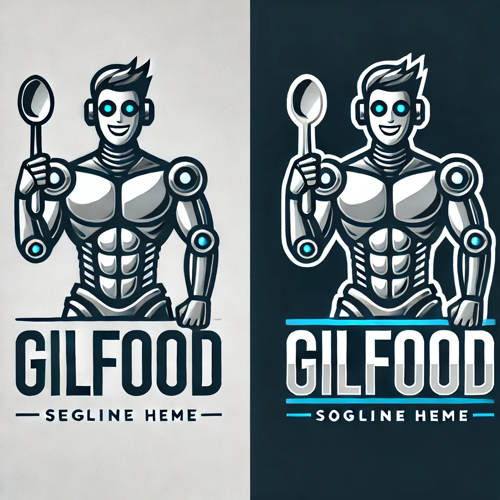

Preguntas Frecuentes
¿Cómo puedo hacer una reserva?
¿Ofrecen comida para llevar?
¿Tienen opciones vegetarianas?
¿Puedo pedir comida a domicilio?
¿Cuáles son los horarios de atención?

Enviar
Regresar al inicio
Ver menú
Reservas
Cerrar